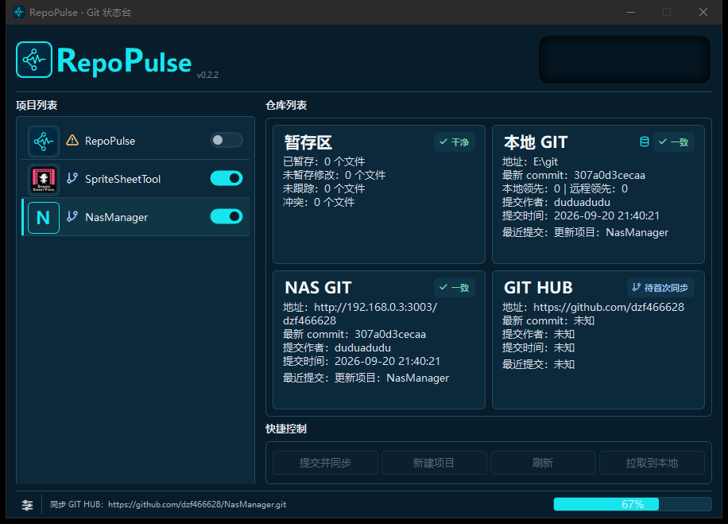
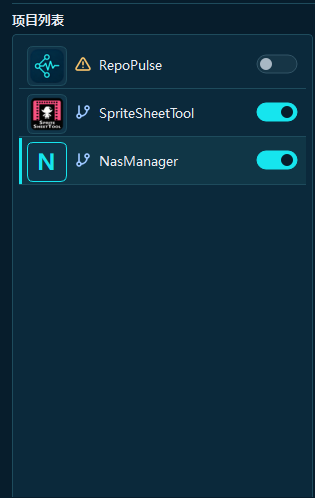
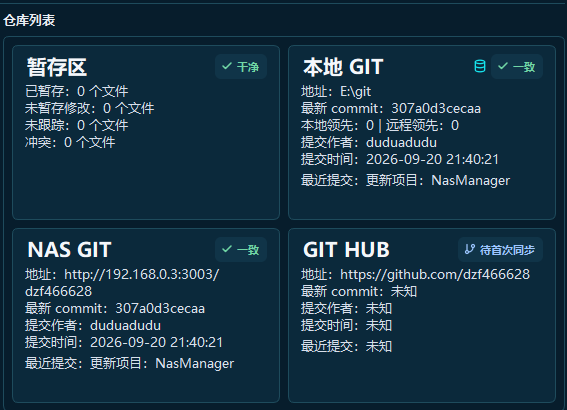
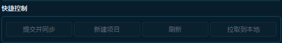
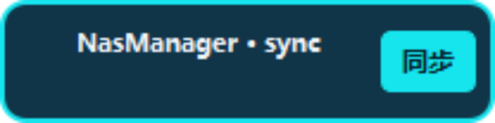

1
添加项目
选择本地工作区，RepoPulse 自动读取 Git 信息并建立项目卡片。
RepoPulse 是一个面向 Windows 的中文 Git 状态台。把本地、NAS、GitHub 的项目连接起来，一眼看清提交、版本和未同步修改。

main · 提交一致
main · 无待提交
dev · 2 个修改
main · 提交一致
最新提交 8f2a1c7 已在 3 个渠道确认
先连接渠道，再让 RepoPulse 在后台完成检查。你的主线始终只看结果。
选择本地工作区，RepoPulse 自动读取 Git 信息并建立项目卡片。
按需连接本地 Git、NAS / Gitea 和 GitHub，统一保存连接配置。
查看 branch、commit、未提交修改和多端一致性，检查过程在后台线程执行。
提交并同步、拉取到本地，或交给定时任务和托盘快捷入口持续运行。
RepoPulse 把重复的 Git 检查收进后台，把真正需要你判断的状态留在前台。
左侧项目列表记录你的工作区，右侧用状态卡并列展示本地和远端结果。项目排序、开关和详情都围绕重复工作设计。

每个渠道都可以独立检查。你能看到仓库是否连通、远端最新提交是什么，以及三处是否已经对齐。

需要提交时，RepoPulse 会明确展示即将处理的项目和渠道。全量同步、修改同步和拉取到本地，都保持在同一个动作区。

RepoPulse 可以收进系统托盘，在后台定时刷新或按修改触发同步。你只在需要时回到主窗口，不必一直守着终端。
主窗口可以最小化，RepoPulse 仍在后台检查。把悬浮窗拖出主窗口后，它会保持置顶，随时告诉你当前项目和同步结果。
悬浮窗会显示项目名、总状态和本地 / NAS / GitHub 各渠道状态。
拖离主窗口自动进入置顶模式，拖回槽位又会跟随主窗口一起收起。
点击浮窗里的“同步”，后台直接处理当前项目，并在完成后通知结果。

RepoPulse 不替换 Git，而是把各个地方的状态和动作整理成一套可读的工作流。
本地工作区是操作源，NAS 和 GitHub 是同步目标。每次刷新都会把连接、提交、修改和一致性结果重新对齐。
读取 branch、最新 commit、未提交修改和仓库目录，让你先知道本地到底发生了什么。
把家庭 NAS 或自建 Gitea 当作可靠副本，支持服务地址、SSH / HTTPS 与凭据配置。
使用本机 SSH、Git Credential Manager 或令牌连接 GitHub；网络暂时不可用时可以忽略该渠道。
它是状态查看和快捷入口，不替你制造一套复杂的 Git 仪式。
项目卡直接告诉你工作区干不干净，避免把旧改动带进下一次提交。
最新 commit 和连接状态并列呈现，快速定位是本地、NAS 还是 GitHub 落后。
在快捷控制里确认动作，后台按渠道执行并显示进度。
任务完成会通知你，主窗口可以继续隐藏，下一次刷新自动接上。
不需要记住每个项目今天有没有改动，打开总览先把状态扫一遍。
把局域网仓库与 GitHub 并列管理，同步前后都能确认是否真的对齐。
定时同步、修改同步和托盘通知，把重复的状态维护交给后台线程。
不会。它只负责状态查看和快捷入口，底层仍然调用 Git；rebase、cherry-pick、冲突编辑等高级操作继续交给你熟悉的工具。
可以。一个项目可以配置本地、NAS / Gitea、GitHub 多个渠道，刷新时分别检查，结果会显示在同一组仓库卡中。
不会。网络检查和同步由后台 QThread 执行，主窗口不会因为远端响应慢而失去响应；GitHub 还可以按策略忽略失败。
默认保存到 Windows 的 AppData\Roaming\GitStatusDesk\projects.json。凭据会跟随当前配置使用，请按你的本机安全策略管理访问权限。
选择工作区后，RepoPulse 可以在同步流程中初始化 Git、生成首次提交，并按已配置渠道创建或连接远程仓库。
安装包面向 Windows 10 / 11 64 位，使用目录版打包，首次升级时会主动清理旧运行库残留。
开源、免费、面向 Windows 的中文 Git 状态总览工具。网页会实时读取下载目录，自动选择最高版本的安装包。